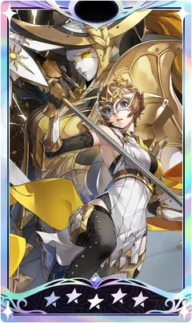

CLOSER·Radiance Radiance Motoha
Fonte: https://lufel.net/en/character/closer-radiance/ · letto il 2026-11-14 con il browser integrato (spoiler attivi) · Stato Global: NON RILASCIATA (lufel: "Not Released"). Convenzione: nomi di skill, awareness, armi, Persona, set e stat lasciati in inglese come su lufel.net; condizioni ed effetti tradotti in italiano. Valori skill = LV10 / LV10+Minds 5 / LV13 / LV13+Minds 5. Valori armi = refinement R0/R1/R2/R3/R4/R5/R6.
Scheda#
| Campo | Valore |
|---|---|
| Nome | Radiance Motoha (Motoha Arai, versione risvegliata; nella review lufel la chiama anche "Motoha·Astra") |
| Codename | CLOSER·Radiance |
| Persona | Awilda |
| Rarità / tipo | 5★ · Limited |
| Elemento | Electric (Elec) |
| Posizione | Assassin |
| Ruolo (lufel) | non indicato |
| Tag (lufel) | HIGHLIGHT · Shield · Pierce Rate |
| Resistenza / Debolezza | Res: Electric · Wk: Wind |
Character Review (lufel)#
- Uscita per il 2º anniversario di P5X, questa versione risvegliata di Motoha è un'unità estremamente forte. Pur essendo una DPS Elec single-target, ha una struttura unica che colpisce 2 nemici alla volta.
- È una DPS incentrata sull'HIGHLIGHT, ma a differenza della maggior parte dei personaggi non consuma la barra HIGHLIGHT e non ha un cooldown separato (il suo HIGHLIGHT ha persino un vero nome di skill).
- Per attivare l'HIGHLIGHT servono in totale 3 stack di [Light]/[Shadow]; può tenerne fino a 6, permettendo due attivazioni consecutive.
- Solo [Light] influenza direttamente il suo danno, quindi l'obiettivo principale è accumulare quanti più stack di [Light] possibile; si ottengono all'inizio del turno e usando la Skill 1.
- Ad Awareness 1 o superiore anche la Skill 3 concede 1 stack, quindi il ciclo cambia.
- La Skill 2 attiva solo la parte di danno della Skill 1 e non applica il debuff della Skill 1, quindi in genere non si usa a meno che non serva specificamente il Taunt.
- Poiché l'HIGHLIGHT contribuisce a una quota così grande del danno totale, Ayaka è di fatto considerata una compagna obbligatoria.
- Il 4★ Aran, uscito simultaneamente, applica debuff colpendo naturalmente 2 nemici: per questo è valutato molto bene come compagno nonostante sia un 4★.
- Poiché il turn revert di Manaka non ripristina questi stack, i test si sono spostati sull'uso con Fuuka. Anche se Motoha sembra progettata attorno a un ciclo base di 2 turni, considerando che Fuuka A0 può scambiare solo due volte, lo schema più consigliato è conservare l'HIGHLIGHT per i turni 3 e 6.
Pro - Il suo HIGHLIGHT separato, indipendente dagli alleati, rende più flessibile il setup HIGHLIGHT complessivo del party. - Accumulando stack può infliggere danni potenti in un singolo turno. - Lo schema di gioco si adatta in modo flessibile alla situazione.
Contro - Poiché il kit ruota attorno all'HIGHLIGHT, l'influenza di compagni specifici è alta.
Recommended Setup (lufel)#
Nota lufel: le impostazioni consigliate sono basate su contenuti futuri; alcune funzioni potrebbero non essere ancora disponibili (Revelation, Mindscape, ecc.).
- Revelation — Space: Purity (tooltip "Purity - Change": quando usa l'HIGHLIGHT, ATK +30% e DMG inflitto +25%) · Sun/Moon/Star/Sky: Change ×4 (2-Set: danno Electric +10% · 4-Set: ATK +25% per 2 turni; si riottiene quando metti a segno un critico)
- Main Options — Sun: HP · Moon: Attack / Damage Mult · Star: Crit Mult / Crit Rate · Sky: Attack
- Sub Options — 1ª priorità: Crit Mult / Crit Rate · 2ª: Pierce Rate · 3ª: Attack / Damage Mult
- Recommended Stats — non indicate da lufel ("-"); Battle Entry +: "-"
- Priorità skill — 1º Highlight · 2º Skill 3 · 3º Skill 1 (MAX) · 4º Skill 2 (livello 8)
- Mindscape (LV 5) — Rank Strengthening 1: Damage Mult 16% · Rank Strengthening 2: Crit Mult 24% · Skill Enforce 1: Skill1 / Skill3 · Skill Enforce 2: Skill2 / HIGHLIGHT
- Skill Rotation — A0 (3T): 3 › 1 › HL+1 › 3 › 1 › HL×2+3 · A0: 1 › HL+3 › 1 › 3 › 1 › HL×2+3 · A1 (3T): 3 › 1 › HL×2+3 › 3 › 1 › HL×2+3 · A1: 1 › HL+3 › 1 › HL+3 › 1 › HL×2+3 · A6: 1 › HL+3 › 1 › HL+3 › 1 › HL×5+3
- Notes (lufel) — nessuna nota.
Skills (LV10 / LV10+Minds 5 / LV13 / LV13+Minds 5)#
Skill 1 — Thunder Thrust (Elec) Infligge danno Elec a tutti i nemici pari al 282.8%/311.8%/300.2%/329.2% dell'Attack, distribuendo il danno tra tutti i nemici. Applica ai bersagli Shock e [Flashover] per 2 turni. Motoha ottiene [Light]. [Flashover]: aumenta il danno subito del 39.0%/43.0%/41.4%/45.4%.
Skill 2 — Unsetting Sun Concede a tutti gli alleati uno Shield di 1561/1721/1657/1817 e 1 Down Point. Applica Taunt a tutti i nemici e riduce il danno subito da Motoha del 39.0%/43.0%/41.4%/45.4%. Dura fino all'inizio del prossimo turno di Motoha. All'inizio del turno successivo attiva automaticamente il danno di [Thunder Thrust]; ogni volta che Motoha subisce danno da skill durante questo effetto, aumenta del 5% lo Skill Damage di quel [Thunder Thrust]. Motoha ottiene [Shadow].
Skill 3 — Skyfall Bolt (Elec) Entra immediatamente nello stato [Resolute Maiden] per 2 turni. Infligge danno Elec a 2 bersagli pari al 162.9%/179.6%/172.9%/189.6% dell'Attack (si può selezionare lo stesso bersaglio); se i bersagli hanno [Flashover], lo Skill Damage sale al 120% del danno normale. [Resolute Maiden]: all'attivazione di un HIGHLIGHT, aumenta il moltiplicatore della skill del 55.8%.
HIGHLIGHT — Twilight Radiance (condizione d'uso: Motoha ha almeno 3 stack di [Light]/[Shadow]) Seleziona 2 nemici (anche lo stesso) e usa su di loro [Spear of Light] e [Spear of Shadow]. [Spear of Light]: infligge danno Elec pari al 223.3%/246.2%/237.0%/259.9% dell'Attack. [Spear of Shadow]: infligge danno fisso pari al 100% del danno di [Spear of Light]; ignora tutte le affinità e riduce i Down Point di 1. Se [Spear of Light] e [Spear of Shadow] colpiscono 2 nemici, lo Skill Damage sale al 115% del normale; se colpiscono lo stesso nemico, il danno critico (Crit Mult) di questa skill aumenta del 30%. Spende 3 stack di [Light]/[Shadow] (prima i [Light]): per ogni [Light] speso, aumenta l'Attack di [Spear of Light] del 29.3%/32.3%/31.1%/34.1%; per ogni [Shadow] speso, concede a tutti gli alleati uno Shield di 488/538/518/568 per 2 turni.
Passiva — Gilding: all'inizio della battaglia Motoha entra in [Resolute Maiden] per 2 turni. Mentre [Resolute Maiden] è attivo, Pierce Rate +15%.
Passiva — Unyielding: quando infligge danno a nemici con [Flashover], Attack +42.0%.
Awareness#
- A0 — Piercing Light (talento base): Motoha ha un HIGHLIGHT speciale, [Twilight Radiance], che non consuma HIGHLIGHT Energy, non ha cooldown, può essere accumulato più volte e può andare a critico. All'inizio del turno di Motoha ottiene 1 stack di [Light]; ottiene stack di [Light]/[Shadow] attivando specifiche skill Persona; massimo 6 stack. Attivando [Twilight Radiance] spende 3 stack di [Light]/[Shadow] e attiva effetti bonus in base agli stack spesi (prima i [Light]).
- A1 — Solar Procession: quando Motoha ottiene [Light]/[Shadow], lo trasforma in [Flowing Light]. Spendendo [Flowing Light] con [Twilight Radiance], si attivano sia gli effetti di [Light] sia quelli di [Shadow]. Quando Motoha entra in [Resolute Maiden], ottiene subito 1 stack di [Flowing Light]. Mentre [Resolute Maiden] è attivo, Crit Rate +15%.
- A2 — Golden Nightsail: il danno delle skill Persona di Motoha conta come danno HIGHLIGHT e può usare l'aumento di moltiplicatore HIGHLIGHT di [Resolute Maiden].
- A3 — Ebon Gold: aumenta di 3 i livelli di skill di [Unsetting Sun] e [Thief Tactics].
- A4 — Svalinn's Shield: HIGHLIGHT [Twilight Radiance] Enhanced: per ogni stack di [Flowing Light] speso, aumenta inoltre del 10% il danno critico di questa skill.
- A5 — Elven Light: aumenta di 3 i livelli di skill di [Thunder Thrust] e [Skyfall Bolt].
- A6 — Crown of Reshaped Destiny: aumenta di 9 gli stack massimi di [Flowing Light]; all'inizio della battaglia Motoha ottiene 9 stack di [Flowing Light]. Attivando [Twilight Radiance] ottiene 1 stack di [Reshape]: aumenta del 5% lo Skill Damage di [Twilight Radiance], cumulabile fino a 5 volte (bonus indipendente).
Stats#
- Base (LV1): HP 294 · ATK 104 · DEF 55 · Speed 96
- Hidden Ability LV7: ATK % 29%
- LV80 (HP / ATK / DEF): A0 3300 / 1170 / 627 · A1 3359 / 1191 / 638 · A2 3419 / 1212 / 649 · A3 3478 / 1233 / 660 · A4 3538 / 1254 / 671 · A5 3597 / 1276 / 683 · A6 3657 / 1296 / 695
Armi esclusive (valori R0/R1/R2/R3/R4/R5/R6)#
5★ Expedition's Edge — HP 2180 · ATK 773 · DEF 414 — passiva Sunset Glow - Aumenta il Crit Rate del 18.1%/18.1%/23.5%/23.5%/28.9%/28.9%/34.3%. - All'attivazione di un HIGHLIGHT, aumenta il danno critico (Crit Mult) del 32.8%/42.8%/42.8%/52.8%/52.8%/62.8%/62.8%. - Per ogni stack di [Light]/[Shadow] ottenuto, aumenta la HIGHLIGHT Damage Amplification del 2.0%/2.6%/2.6%/3.2%/3.2%/3.8%/3.8%; permanente, cumulabile fino a 6 volte.
4★ Ruler of Sun — HP 1744 · ATK 618 · DEF 331 — passiva Noon Brilliance - Aumenta l'Attack del 12.0%/12.0%/16.0%/16.0%/20.0%/20.0%/24.0%. - Spendendo [Light], aumenta l'Attack dell'utente del 7.3%/9.6%/9.6%/11.9%/11.9%/14.2%/14.2%; spendendo [Shadow], aumenta la Defense dell'utente del 7.3%/9.6%/9.6%/11.9%/11.9%/14.2%/14.2%. Effetti permanenti, ciascuno cumulabile fino a 3 volte.
Attribute Mindscape (lufel: introdotto in KR V5.2, forse non ancora su Global)#
- Mindscape Synergy — Critical Damage Increase (consigliata): aumenta il danno critico (Crit Mult) del 12.0%/24.0%.
- Mindscape Combat Skill — Overclocked Critical (consigliata): quando il proprio Crit Rate supera il 100%, ogni 1% di Crit Rate in eccesso viene convertito in 2.0%/4.0% di danno critico; conta fino al 20% di Crit Rate.
Recommended Combination (lufel)#
Nota lufel: alcune Persona e armi consigliate potrebbero non essere ancora uscite nella tua regione. - Wonder Weapons: Cyclotron - Persona (ATK): Thor · Dominion - Persona (CRITICAL): Dionysus · Yurlungur
Recommended Parties (lufel)#
Nota lufel: la maggior parte degli esempi di party è stata scritta attorno all'uscita KR/CN del personaggio; Thieves o Mindscape Core successivi potrebbero non essere considerati. Solo riferimento. - Lineup — CHORD: il danno di Motoha·Astra è fortemente incentrato sull'HIGHLIGHT, quindi Ayaka è un membro centrale del party; usare la Skill 3 non rimuove i suoi stack anche quando si usa l'HIGHLIGHT, e ha una passiva che amplifica molto il danno di Motoha. · ANRI: può condurre e amplificare il danno tra due nemici, quindi nonostante sia un 4★ mostra un'efficienza altissima con Motoha. · J&C: [Strategist] J&C aumentano molto il danno complessivo tramite skill amplification. · MARIAN·Beachflower: aumenta il danno complessivo di Motoha con una pozione di amplificazione del danno HIGHLIGHT. · BLITZ: può alzare il danno complessivo di Motoha·Astra tramite DEF reduction AoE e supporto legato al Down. · FUUKA: permette di far entrare Koromaru come personaggio di scambio. · KOROMARU: tramite [Attribute Downgrade] rafforza la debolezza Electric del nemico e riduce la Defense. - Party d'esempio — CLOSER·Radiance / CHORD / J&C / FUUKA · CLOSER·Radiance / CHORD / ANRI / FUUKA · CLOSER·Radiance / CHORD / BLITZ / FUUKA · CLOSER·Radiance / CHORD / MARIAN·Beachflower / FUUKA · CLOSER·Radiance / J&C / JOKER·Starlight / FUUKA
Nomenclatura#
- lufel: "Radiance Motoha" (codename CLOSER·Radiance; nella review e nei lineup anche "Motoha·Astra"), slug URL
closer-radiance. Stati/risorse: [Light], [Shadow], [Flowing Light], [Flashover], [Resolute Maiden], [Spear of Light], [Spear of Shadow], [Reshape]. - Nelle descrizioni lufel "critical rate" = Crit Rate, "critical damage" = Crit Mult.